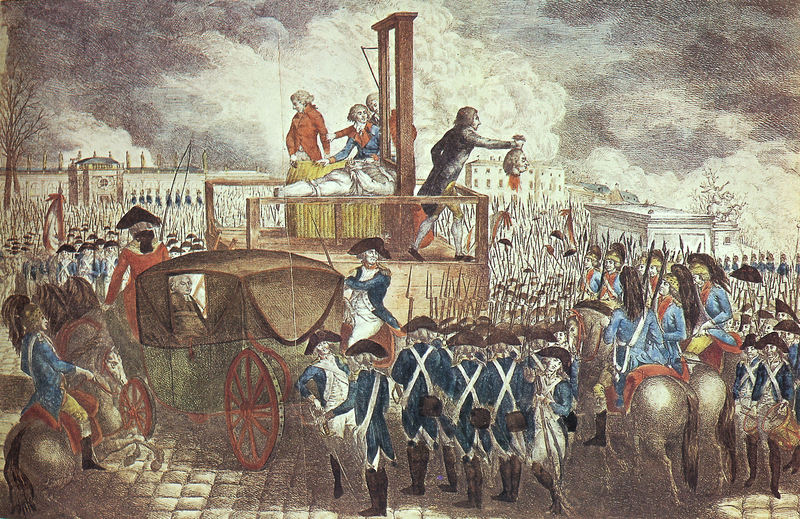

Contexto Histórico e Eventos e Desenvolvimentos Principais
A Revolução Francesa foi inspirada nos princípios do Iluminismo, que defendiam que o poder e a autoridade deveriam ser baseados na razão. Os filósofos iluministas promoviam valores como a liberdade, o constitucionalismo e eram fortes defensores da separação entre a Igreja e o Estado. Além disso, se opunham firmemente à monarquia absolutista e abraçavam o método científico. As revoluções burguesas do século XVIII, tanto a Revolução Americana quanto a Revolução Francesa, foram profundamente influenciadas por essas ideias iluministas.

Após a Queda da Bastilha, a Revolução Francesa se espalhou pelo país e se estendeu ao longo de uma década, encerrando-se quando Napoleão Bonaparte assumiu o poder por meio do Golpe de 18 de Brumário. Podemos dividir a Revolução Francesa em três principais fases, correspondentes às instituições políticas que governaram o país durante esse período:
1. Assembleia Nacional Constituinte e Assembleia Legislativa (1789-1792): Esse foi o início da Revolução Francesa, marcado por grandes mudanças, como a elaboração de uma Constituição para a França e a atuação da Assembleia Legislativa. Após a Queda da Bastilha, camponeses no interior do país começaram a atacar aristocratas e suas propriedades durante o chamado "Grande Medo". A burguesia, preocupada com o poder popular, promulgou a abolição dos direitos feudais e a Declaração dos Direitos do Homem e do Cidadão. No entanto, essa igualdade era limitada ao aspecto jurídico, não implicando uma verdadeira democratização. A burguesia também confrontou o clero com a Constituição Civil do Clero em 1790, que separou Igreja e Estado. O rei Luís XVI tentou fugir em 1791, mas foi detido e reconduzido a Paris. A Assembleia Constituinte finalmente promulgou a Constituição de 1791, transformando a França em uma monarquia constitucional, desapontando os revolucionários que desejavam uma república democrática. A burguesia conservadora dominou a Assembleia Constituinte. Com a Constituição de 1791, a Assembleia Constituinte cedeu lugar à Assembleia Legislativa, onde dois grupos políticos se destacaram: os girondinos, mais conservadores, e os jacobinos, que buscavam mudanças mais radicais. A Assembleia Legislativa funcionou de 1791 a 1792, período marcado pela crescente ameaça externa à Revolução, com as potências europeias reagindo ao processo revolucionário na França.
2. Convenção Nacional (1792-1795): A Convenção Nacional substituiu a Assembleia Legislativa em setembro de 1792, quando a França se tornou uma República. A questão da execução do rei Luís XVI dividiu a Convenção, com os girondinos defendendo o exílio e os jacobinos apoiando a guilhotina, que prevaleceu após provas de conspiração. Com a ascensão dos jacobinos e a criação do Comitê de Salvação Pública, a França entrou em um período de radicalização conhecido como o Terror. A guerra contra as nações absolutistas europeias se intensificou, e a Lei dos Suspeitos levou a julgamentos e execuções em massa. Os jacobinos conseguiram estabilizar a situação interna e venceram as forças invasoras, mas também geraram oposição interna. A execução do rei Luís XVI causou indignação nas nações absolutistas europeias, que formaram uma coalizão para derrubar a Revolução Francesa. Esse exército contrarrevolucionário foi financiado pela Inglaterra. O período do Terror chegou ao fim com a Reação Termidoriana em 1794, quando os girondinos, apoiados pela alta burguesia, derrubaram os jacobinos, inclusive Robespierre. 
3. Diretório (1795-1799): O Diretório sucedeu à Convenção Nacional e foi marcado por uma fase de instabilidade. Os girondinos e a alta burguesia governaram, revertendo medidas radicais dos jacobinos e restaurando o voto censitário. A França enfrentou descontentamento popular, problemas econômicos e ameaças externas contínuas. A busca por uma solução autoritária levou ao apoio a Napoleão Bonaparte, um general do exército francês que liderava a luta contra as coalizões internacionais. Em 1799, Napoleão organizou o Golpe do 18 de Brumário, assumindo o poder e encerrando o Diretório.